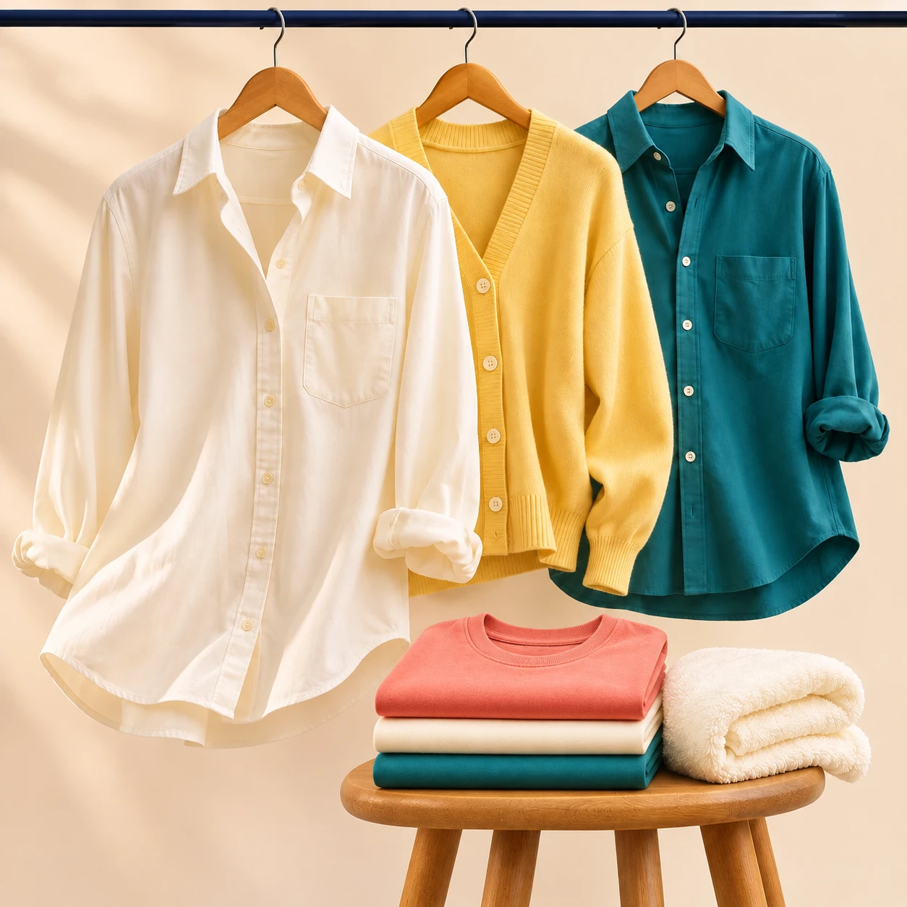

01 / A FRESH LITTLE RESET↗
Everyday laundry
For the never-ending basket. Wash & fold, or wash & steam iron for a ready-to-wear finish.
Wash & foldSee price
Everyday laundry, delicate dry cleaning, crisp steam ironing, and shoe care. Your wardrobe, thoughtfully cared for by your local Fresh Threads team.

CLEAN CLOTHES. CLEAR HEAD. GOOD DAY.Your daily staples. Your celebration pieces.
And everything that makes home feel like home.
Browse all prices ↗
For the never-ending basket. Wash & fold, or wash & steam iron for a ready-to-wear finish.
Your silk sarees, suits, and special pieces deserve attention suited to their fabric.
Less time at the ironing board. More time looking sharp in the clothes you love.
A fresh step for the everyday essentials that go everywhere with you.
Freshen up your comfort zone. Bedsheets, blankets, curtains, and more.
For the outfits with a story. Tell us about the fabric, details, and care it needs.
Selected rates from our price list. Starting rates vary by fabric, size, and condition. Confirm the final quote with our team.
Choose your service and send a pickup request on WhatsApp. We’ll confirm the location, timing, and charges.
We use a cleaning approach suited to the fabric and care label. Tell us about stains or special care before we begin.
We’ll confirm the estimated return time with you. Unpack your fresh start and get back to the things you’d rather do.
That favourite shirt isn’t
“just a shirt.”
We get it.
Everyday favourites or once-a-year treasures: feel comfortable asking questions, sharing care instructions, and knowing what to expect.
We follow care labels where available and discuss delicate fabrics, embellishments, and existing wear with you.
Browse our item-wise price list. For special-care pieces, talk through a quote with the team before booking.
We’re right here in Kondapur. Message, call, or visit us whenever you have a service question.
Laundry on repeat? Our memberships add extra wallet credit to your one-time top-up.
Ask about memberships ↗Get ₹1,150 wallet credit
₹151 extra valueGet ₹4,700 wallet credit
₹701 extra valueGet ₹8,400 wallet credit
₹1,401 extra valueWallet credit is for services, not a cash payout. Confirm current plan availability and terms with the team before topping up.
Something else on your mind?
Let’s chat ↗Tap “Book a pickup”, choose a service, and open your request in WhatsApp. Share your address with our team there. We’ll confirm your service area, pickup time, and any collection charges before scheduling.
Turnaround depends on the service, fabric, and current workload. Our team will confirm an estimated return time when you book. Please tell us if you have a particular date in mind.
We offer dry cleaning for sarees, suits, occasion wear, and other special-care pieces. Tell us about the fabric, embellishments, and any existing damage so we can discuss the suitable care and price.
Complete stain removal cannot be guaranteed. Results depend on the fabric, the type of stain, and how long it has been there. Please point out stains when handing over your items.
Make a one-time top-up and receive the plan’s wallet credit, including extra value. Credits are applied against service bills. Ask our team for the current plan terms before activation.
H.No 1-4/175-178/53, Sri Prabhupada Township,
Beside Luxor Apartment, Kondapur,
Hyderabad, Telangana 500084.